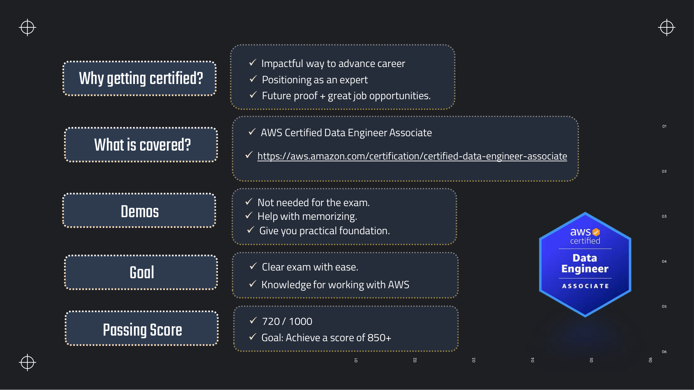
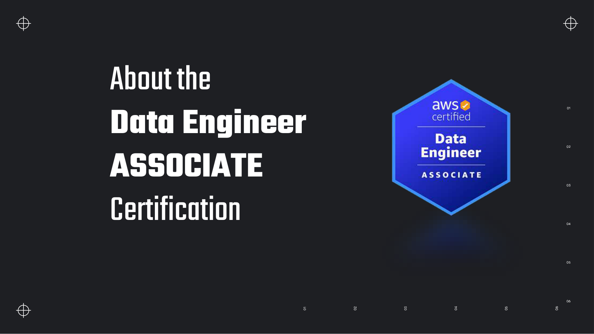
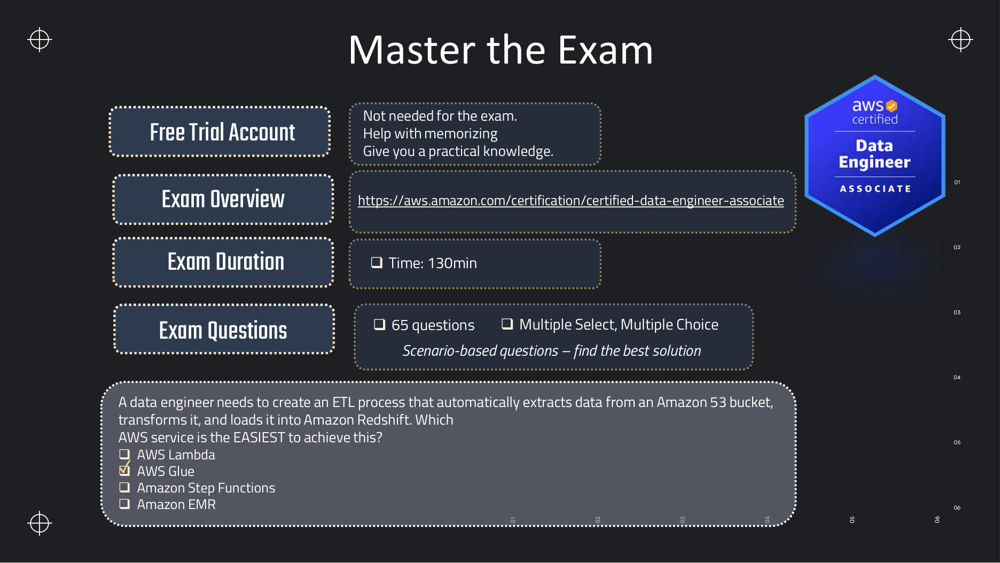
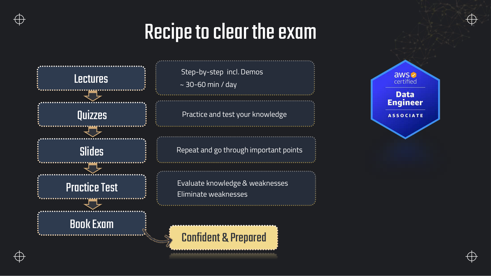
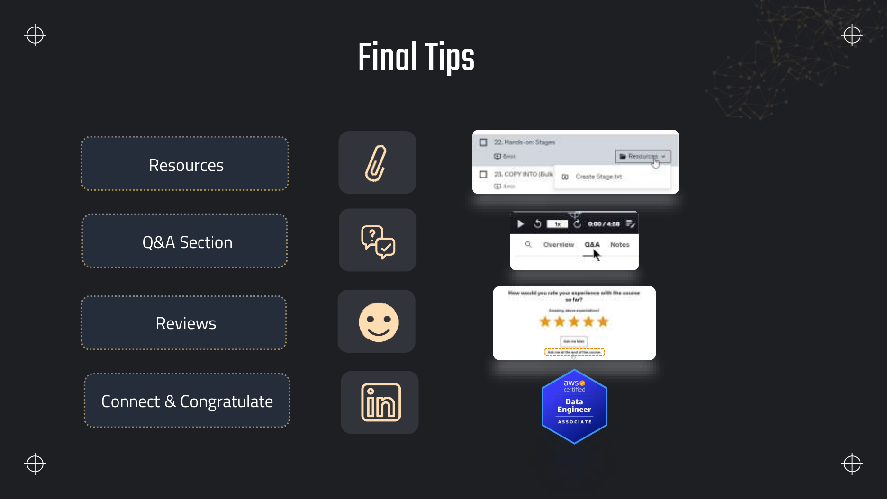

Lectures in this section
Each lecture links to the notes that cover it. Sample dataset for every lab in this course: data/customers.csv.
- Introduction & about the Data Engineer Associate certification ~4:00 Slides 2–4
- Exam overview: format, duration and scoring ~5:00 Slide 5
- The four exam domains and their weightings ~4:00
- Recipe to clear the exam ~3:00 Slide 6
- Course setup: free trial account and billing guardrails ~6:00
- How the 60+ services in this course fit together ~4:00
- Final tips and resources ~2:00 Slide 7
About the Data Engineer Associate certification
DEA-C01 certifies that you can build and operate data pipelines on AWS — ingest data, transform it, choose where it lives, keep it running, and secure it. It sits at associate level alongside Solutions Architect Associate and Developer Associate, and it replaced the retired Data Analytics Specialty as the data-focused exam.

What the certification is actually worth
- It is a hiring filter. Data engineering job posts routinely list an AWS associate certification as a preference. It gets a CV past the first screen.
- It forces breadth. Nobody uses Keyspaces, Neptune, Timestream, MSK and Redshift Spectrum in one job. Studying for the exam is how you learn which one to reach for when you do meet the problem.
- It teaches cost. Half of the exam's "best solution" questions are really cost questions. Knowing that Athena bills per terabyte scanned and Firehose has no replay changes the architectures you propose.
What is in scope, and what is not
In scope
- Building ETL/ELT pipelines and orchestrating them
- Choosing data stores and designing data models
- Cataloguing schemas and managing data lifecycles
- Monitoring, troubleshooting and optimising pipelines
- Encryption, access control, governance and logging
- Comparing services on cost, performance and features
Out of scope
- Building or tuning machine learning models
- Language-specific syntax questions ("what does this Python line print")
- Drawing business conclusions from data
- Deep networking design beyond what a pipeline needs

aws.amazon.com/certification/certified-data-engineer-associate.Exam format and scoring

| Property | Value | What it means in practice |
|---|---|---|
| Questions | 65 | 50 are scored; 15 are unscored trial questions you cannot identify. Answer every one. |
| Duration | 130 minutes | Exactly 2 minutes per question. Scenario questions take 3–4, so bank time on the easy ones. |
| Question types | Multiple choice, multiple response | Multiple choice = one of four. Multiple response = choose two (or more) of five; partial credit is not given. |
| Passing score | 720 / 1000 | Scaled, not a percentage. Roughly 70–75% of scored questions correct. |
| Style | Scenario-based | "A company needs to… Which solution meets these requirements with the LEAST operational overhead?" |
| Cost / validity | 150 USD / 3 years | Test centre or online proctored. Recertify by retaking, or by passing a higher-level exam. |
Scaled scoring, and why it matters
Your score is not "questions right ÷ questions asked". AWS maps your raw score onto a 100–1000 scale that accounts for question difficulty, so a hard question set is scored more generously. Two consequences:
- There is no penalty for guessing. An unanswered question and a wrong answer score the same. Never leave one blank.
- You do not need to pass every domain. The exam is scored as a whole, so a weak domain can be carried by a strong one. The per-domain feedback on your score report is diagnostic only.
The four exam domains
The exam guide splits the content into four domains with fixed weightings. Mapping them onto this course's sections tells you where to spend your study time.
| Domain | Weight | Core content | Sections |
|---|---|---|---|
| 1. Data Ingestion and Transformation | 34% | Streaming and batch ingestion, ETL pipelines, orchestration, programming concepts, replayability, idempotency | 02, 04, 05, 06, 15, 18 |
| 2. Data Store Management | 26% | Choosing data stores, data modelling, schema evolution, cataloguing, lifecycle management | 07, 08, 09, 10, 11 |
| 3. Data Operations and Support | 22% | Automation, monitoring, logging, troubleshooting, analysing data, data quality | 03, 12, 13, 16, 17 |
| 4. Data Security and Governance | 18% | Authentication, authorisation, encryption, masking, privacy, governance, audit logging | 16, 19, 20, 13 (Lake Formation) |
A study routine that works

The loop, with these notes in place of the slides
A four-week plan
| Week | Sections | Focus |
|---|---|---|
| 1 | 01–06 | Ingestion: S3 basics, Glue, Athena, Lambda, Kinesis. This is Domain 1 — the largest slice. |
| 2 | 07–11 | Storage: S3 in depth, DynamoDB, Redshift. Redshift alone is 120 slides; give it three days. |
| 3 | 12–17 | Analytics and operations: EMR, OpenSearch, QuickSight, Lake Formation, Step Functions, CloudWatch. |
| 4 | 18–21 + Extras | Migration, networking, security, then practice exams until you are consistently over 850. |
Course setup: account and billing guardrails
Every hands-on task in these notes runs in a personal AWS account. Almost all of it fits inside the free tier, but a forgotten Redshift cluster or an idle MSK broker will bill real money — so set the guardrails up first, in this order.
1. Create the account
- Sign up at
aws.amazon.com. A card is required even for free-tier use. - New accounts get 12 months of free tier on many services plus some always-free allowances: 5 GB of S3 Standard, 1 million Lambda requests a month, 25 GB of DynamoDB storage, 750 hours of a
db.t3.microRDS instance. - Pick one region and stay in it —
us-east-1has every service and the cheapest prices. Resources in the wrong region are the most common cause of "my crawler cannot see my bucket".
2. Stop using the root user
The root user can close the account and cannot be restricted by policy. Turn on MFA for it, then create an admin IAM user and use that instead. This is also exam material — see Section 16.
3. Set a budget before you build anything
AWS Budgets will email you when forecast spend crosses a threshold. A 5 USD budget on a study account catches a forgotten cluster within a day instead of at the end of the month.
aws configure
# AWS Access Key ID [None]: AKIA...
# AWS Secret Access Key [None]: ...
# Default region name [None]: us-east-1
# Default output format [None]: json
aws sts get-caller-identity
# {
# "UserId": "AIDA...",
# "Account": "123456789012",
# "Arn": "arn:aws:iam::123456789012:user/study-admin"
# }
aws s3 lsdc2.large, not free tier), an MSK cluster (no free tier at all), an OpenSearch domain past the free-tier hours, and NAT Gateways (~0.045 USD/hour plus data). Delete these the moment a lab is finished — not "later".4. Load the sample dataset
The course uses a small customer file for its Glue, Athena and DataBrew demos. It ships with these notes at data/customers.csv: seven columns, eleven rows, and one deliberate duplicate row so deduplication and data-quality labs have something to find.
ID,Name,Age,Address,City,State,Email
1,John Smith,25,123 Main St.,New York,NY,johnsmith@example.com
2,Jane Doe,30,456 Oak Street,Los Angeles,CA,janedoe@example.com
...
6,Sarah Smith,28,123 Aspen Street,New York,NY,sarahsmith@example.com
...
11,Sarah Smith,28,123 Aspen Street,New York,NY,sarahsmith@example.com <-- duplicate of row 6How the services in this course fit together
The course teaches sixty-odd services across twenty sections, which is disorienting until you see that nearly all of them occupy one of five slots in the same pipeline. Almost every exam scenario is a variation of this shape.
The reference pipeline every DEA-C01 scenario is built from
The five questions that pick the service
| Question | If yes… | If no… |
|---|---|---|
| Does data arrive continuously? | Kinesis Data Streams, MSK, Firehose | Batch: DMS, DataSync, Glue, AppFlow |
| Must consumers replay history? | Kinesis Data Streams or MSK (retention) | Firehose is enough and cheaper |
| Is the access pattern known and key-based? | DynamoDB | Ad-hoc SQL: S3 + Athena, or Redshift |
| Is it complex, long-running Spark work? | EMR | Glue (serverless, less to manage) |
| Does the question say "least operational overhead"? | Serverless: Glue, Athena, Lambda, Firehose | Provisioned may win on cost at scale |
Resources and how to use this course

Sources worth your time beyond the lectures
| Resource | Why |
|---|---|
| Official exam guide | Lists every in-scope task statement. Read it once at the start and again the week before — it is the closest thing to a syllabus. |
| AWS Skill Builder exam-prep course | Free, and its sample questions match the real exam's tone better than most third-party sets. |
| Service FAQ pages | The single best source for the limits the exam loves: Kinesis shard throughput, DynamoDB item size, Athena quotas. |
| The pricing pages | You do not need to memorise numbers, but you must know the unit: per TB scanned, per DPU-hour, per shard-hour, per RPU-second. |
| These notes' Extras page | Exam-guide topics the course does not teach in depth: file formats, compression, SCDs, data quality, Bedrock, cost optimisation. |
Deeper detail and exam edge cases
Exam logistics, study economics, and a map of the full course — the operational context the opening slides skip because they assume you already know how certification works.
Limits and quotas that decide answers
| Limit | Value | Adjustable? | Why it matters |
|---|---|---|---|
| Total questions per sitting | 65 | No (hard) | 15 are unscored trial items mixed in — you cannot tell which. Answer all 65. |
| Scored questions | 50 | No (hard) | Your 720 pass target maps to roughly 70–75% of these, not 65 total. |
| Exam duration | 130 minutes | Yes — ESL accommodation adds 30 minutes for non-native English speakers (request before booking) | ~2 minutes per question on average; long scenarios need time banked from quick ones. |
| Passing scaled score | 720 / 1000 | No (hard) | Scaled, not a percentage — difficulty varies between sittings. |
| Exam fee (USD) | 150 | No — but AWS sometimes runs promotions | Retakes cost the same unless you hold a voucher. |
| Certification validity | 3 years | No (hard) | Recertify by retaking DEA-C01 or passing a higher-level cert that renews associates. |
| Retake waiting period | 14 days after a failed attempt | No (hard) | Plan revision time; do not book the next slot for day 15 without a practice-test gap closed. |
| Attempts per 12-month window | 3 per exam | No (hard) | Fourth attempt requires waiting until the first attempt falls outside the window. |
| Delivery options | Pearson VUE test centre or online proctored | Yes — choose at registration; can reschedule within policy | Online requires a quiet room, webcam, government ID, and cleared desk; test centres supply the environment. |
| ID requirement | Valid government-issued photo ID matching registration name | No — must comply | Mismatch between Pearson VUE profile and ID is a common check-in failure. |
| Recertification voucher | 50% discount on the next exam after passing | N/A — automatic benefit | Valid for the renewal window; useful if you want to recertify before the three years expire. |
| Reschedule / cancel window | Varies by slot; typically 24+ hours before appointment without fee | Yes — via Pearson VUE | Late cancel may forfeit the fee; treat the booked date as a hard deadline for readiness. |
| Other accommodations | Extra break time, separate room, etc. | Yes — request through Pearson VUE accessibility flow before booking | Approved accommodations apply to both centre and online delivery. |
| Domain pass requirement | None — whole-exam score only | No (hard) | Per-domain feedback on the score report is diagnostic; a weak domain can be carried. |
What you actually pay for
| Billed dimension | Unit | How to spend less |
|---|---|---|
| DEA-C01 exam sitting | 150 USD per attempt | Book only after practice tests consistently exceed 850; failed retakes add another 150 USD plus 14-day wait. |
| Official practice exam (Skill Builder) | ~20–40 USD (check current Skill Builder pricing) | One purchase is enough if you review every wrong answer; third-party sets are optional. |
| Hands-on lab month (disciplined cleanup) | Often 0–5 USD | Delete Redshift, MSK, NAT Gateway, OpenSearch and Glue sessions same day; stay in free tier (5 GB S3, 1M Lambda requests, 2 AWS Budgets free). |
| Hands-on lab month (forgotten resources) | 50–200+ USD possible | A dc2.large Redshift cluster (~0.25 USD/hr), NAT Gateway (~0.045 USD/hr plus data), or idle MSK brokers dominate surprise bills. |
| S3 lab storage | Per GB-month Standard | Course data is kilobytes; cost appears when you keep multi-GB sample datasets or enable versioning without lifecycle expiry. |
| Glue / Athena lab queries | DPU-hours; ~5 USD/TB scanned | Use LIMIT, small CSVs, CTAS once then query Parquet; crawlers have a 10-minute minimum bill. |
| AWS Budgets | First two budgets free | Set the 5 USD forecast alert from Section 1 before any lab — catches runaway spend in days. |
| KMS / cross-AZ (advanced labs) | Per request; per GB transferred | Skip CMK-encrypted buckets in early labs; keep everything in one AZ and one Region (us-east-1). |
Traps that catch people
- Free-tier resources left running — Students finish a Redshift lab and close the browser. The cluster bills hourly until terminated. Set a calendar reminder or a Budget forecast alert the same day you create anything provisioned.
- NAT Gateway overnight — VPC labs that route private subnets through a NAT Gateway incur ~0.045 USD/hour plus data processing even with zero traffic. For study, use public subnets, VPC endpoints, or tear down the whole VPC stack after the exercise.
- Redshift cluster idle — Paused clusters still store data; running clusters bill compute continuously. Snapshot-to-S3 then delete the cluster is the correct end-of-lab pattern.
- Deck facts treated as current — The course deck predates S3 strong consistency, newer Glue billing floors, and renamed services. These notes flag corrections — if your memory says "eventually consistent S3", you will miss exam questions.
- Time sunk on long scenarios — A four-paragraph scenario with two qualifying phrases can take five minutes. Spending six minutes on question 10 leaves you rushing the last ten. Flag and return rather than stall.
- Changing answers on review without evidence — Statistics favour the first instinct when you had a reason. Only change an answer if you remember a specific limit, pricing unit, or integration fact that contradicts your original choice.
- Studying recognition instead of recall — Re-watching lectures feels productive but does not build the "which service when" reflex. The interview questions at the end of each section exist to force recall — skip them and scenario questions stay slow.
- Booking before practice tests — A date creates urgency, but booking with practice scores below 800 often wastes 150 USD and a 14-day wait. Use the course recipe: practice test first, then book.
- Wrong Region resources — Buckets, crawlers and Athena must share a Region. Cross-Region listing works in the console but pipelines fail silently with empty tables — always verify
us-east-1(or your chosen single Region) on every resource.
Troubleshooting playbook
| Symptom | Most likely cause | What to check / fix |
|---|---|---|
| High scores on flashcards but failing scenario questions | Memorising definitions without service-selection axes (latency, cost unit, operational overhead) | Re-read the five-question table in Service map; practice with Section 21 decision tables; answer interview questions cold. |
| Cannot finish 65 questions in 130 minutes | Reading scenarios top-to-bottom; debating between three plausible answers | Read the last sentence first for the qualifier; eliminate two answers before comparing the rest; flag and move on at 2.5 minutes. |
| Keep confusing Kinesis Data Streams and MSK | Both say "Kafka-like" in summaries | Streams = AWS-native shards, 24h–365d retention, no cluster ops. MSK = managed Apache Kafka, full Kafka API, longer retention, higher ops. Firehose = no replay, near real time. |
| Keep confusing Glue and EMR | Both run Spark | Glue = serverless, bookmarks, Data Catalog integration, per DPU-hour. EMR = cluster you size, install libraries, patch — wins on long-running custom Spark at scale. |
| AWS bill higher than expected after labs | Provisioned service still running or NAT/data transfer | Cost Explorer → filter by service; check Redshift, EC2, MSK, OpenSearch, NAT Gateway, Glue interactive sessions; terminate and confirm $0 forecast in Budgets. |
| Practice tests OK but real exam feels harder | Third-party questions often easier; real exam has longer scenarios | Add the official Skill Builder practice exam; target 850+ on mixed sources before sitting. |
| Online proctor check-in failed | ID mismatch, room not clear, or prohibited software | Match Pearson VUE legal name to ID; single monitor, no notes; close all apps; test webcam/mic day before. |
| Weak on one domain dragging overall score | Domain 1+2 are 60% of weight — gaps there hurt most | Map weak task statements to sections via Four domains; prioritise S3, Glue, Redshift, Kinesis before niche databases. |
Production patterns
In industry, DEA-C01 is a breadth credential, not a substitute for pipeline ownership. Hiring teams use it to confirm you can name the right AWS service for ingest, store, transform, and govern — the same shape as the reference pipeline in this section. Practitioners who hold it typically already run Glue or Spark jobs, query lakes with Athena, and touch Redshift or DynamoDB; the cert fills gaps (Lake Formation, DMS, MSK, cost trade-offs) rather than teaching greenfield architecture from zero.
Four-week sprint (full-time or ~2 hr/day)
- Week 1: Sections 01–06 — ingestion and streaming foundations.
- Week 2: Sections 07–11 — storage and Redshift depth.
- Week 3: Sections 12–17 — analytics, ops, containers.
- Week 4: Sections 18–21 + practice exams; book exam in week 4 only if scores exceed 850.
Best when you already use AWS data services daily and need the credential quickly.
Eight-week steady pace (~45 min/day)
- Weeks 1–2: 01–04 with all hands-on tasks — S3, Athena, Glue deep dive.
- Weeks 3–4: 05–08 — Lambda, Kinesis, S3 advanced, other storage.
- Weeks 5–6: 09–14 — databases, Redshift, SageMaker touchpoints.
- Weeks 7–8: 15–21 + Extras; two full practice exams in the last week.
Best when learning AWS data services from scratch — doubles time on labs and interview questions.
Anti-pattern: binge-watching all lectures then taking the exam. Recognition of slide wording fails on scenario questions that paraphrase requirements. The working pattern is one section per sitting: read, lab, answer interview questions from memory, then move on.
aws ce get-cost-and-usage \
--time-period Start=2026-08-01,End=2026-08-08 \
--granularity DAILY \
--metrics UnblendedCost \
--group-by Type=DIMENSION,Key=SERVICE \
--query 'ResultsByTime[-1].Groups[?Metrics.UnblendedCost.Amount!=`0`]'Where this fits with the rest of the exam
Section 1 is the syllabus map. Every other section assumes you know the four domain weightings, the exam question style, and the ingest → store → transform → serve mental model. Use the groups below to route study time — Domain 1 and 2 together are 60% of scored content.
- Domain 1 — Ingestion and Transformation (34%): 02 Data Ingestion (S3 landing zone, batch vs stream), 04 Glue Deep Dive (ETL, bookmarks, DataBrew), 05 Lambda (event-driven transforms), 06 Streaming (Kinesis, Firehose, MSK), 15 App Integration (Step Functions, EventBridge orchestration), 18 Migration (DMS, DataSync, Snowball).
- Domain 2 — Data Store Management (26%): 07 S3 (lifecycle, encryption, access points), 08 Other Storage (EFS, FSx, Storage Gateway), 09 DynamoDB (key-value, streams), 10 Redshift (warehouse, Spectrum, COPY), 11 Other Databases (RDS, Aurora, Keyspaces, Neptune).
- Domain 3 — Data Operations and Support (22%): 03 Athena (ad hoc SQL, cost control), 12 Compute (EMR vs Glue), 13 Analytics (Lake Formation, OpenSearch, QuickSight), 16 Management (CloudWatch, IAM, CloudTrail), 17 Containers (ECS, EKS for data workloads).
- Domain 4 — Security and Governance (18%): 20 Security (KMS, Macie, encryption patterns), 19 VPC (endpoints, flow logs for data planes), 16 IAM (roles for Glue, Redshift, Lake Formation), Lake Formation in 13.
- Cross-cutting: 14 SageMaker (feature store, lineage — lighter exam weight), 21 Exam Prep (decision tables, timing tactics), Extras (file formats, SCDs, compression, Bedrock), Interview prep (role-based questions beyond the cert).
Interview questions
Answer each one out loud before opening it. These are the data-engineering fundamentals every later section assumes.
What does a data engineer actually own, as opposed to a data analyst or a data scientist?Fundamentals
A data engineer owns the movement and shape of data: ingesting it from source systems, transforming it into a modelled, queryable form, choosing where it lives, and keeping those pipelines running, monitored and secure. The analyst consumes the result to answer business questions; the scientist consumes it to train models. The dividing line in interviews is ownership of reliability — if a dashboard is wrong because a nightly job silently dropped rows, that is the data engineer's problem.
On AWS terms, that is the difference between building the Glue job and Redshift model (engineer) and writing the QuickSight analysis on top (analyst).
Explain the difference between a data lake, a data warehouse and a lakehouse, and when each is the right answer.Architecture
Data lake: raw and semi-processed data of any structure in cheap object storage, schema applied on read. On AWS that is S3 plus the Glue Data Catalog, queried with Athena. Cheap, flexible, and slow to query if you do not partition it.
Data warehouse: cleaned, modelled, strongly typed data in a columnar store optimised for analytical SQL and concurrency, schema applied on write. On AWS that is Redshift. Faster and more expensive per byte.
Lakehouse: warehouse-style query engines and table semantics — ACID transactions, updates, time travel — over data that stays in the lake, using open table formats such as Iceberg, Hudi or Delta Lake. On AWS that is S3 plus Iceberg with Athena, Redshift Spectrum or EMR.
Choose a lake when the schema is unstable or the data volume makes warehouse storage prohibitive; a warehouse when many concurrent users need fast, consistent SQL over modelled data; a lakehouse when you want both and can accept the operational complexity of table maintenance.
ETL versus ELT — what changed, and why did ELT become the default on AWS?Fundamentals
ETL transforms data in a separate compute layer before loading it into the target, so only clean, modelled data lands. ELT loads raw data into the target first and transforms it there with the target's own engine.
ELT won because storage became cheap and warehouse compute became elastic. Loading raw into S3 or Redshift costs almost nothing, keeps the original for reprocessing, and lets you transform with SQL rather than a separate framework. It also means a transformation bug is fixable by re-running SQL rather than re-ingesting from the source system.
ETL still wins when data must be masked or filtered before it lands for compliance reasons, when the target cannot transform efficiently, or when the raw volume is too large to store. Section 10 covers both patterns as Redshift design patterns.
What is the difference between OLTP and OLAP workloads, and how does it change your storage choice?Fundamentals
OLTP is transactional: many small, concurrent reads and writes touching a few rows each, identified by key, with strict consistency. Row-oriented storage suits it — RDS, Aurora, DynamoDB.
OLAP is analytical: fewer, larger queries scanning millions of rows but only a handful of columns, aggregating as they go. Columnar storage suits it because it reads only the needed columns and compresses each column well — Redshift, Athena over Parquet.
Running the wrong one on the wrong store is a classic exam trap: a "generate a monthly report over 500 million orders" question is OLAP and belongs in Redshift or Athena, not in a DynamoDB scan; "look up a user's cart by user id in single-digit milliseconds" is OLTP and belongs in DynamoDB, not in Athena.
Batch versus streaming ingestion: how do you decide, and what does "near real time" mean concretely?Design
Decide on required latency and arrival pattern, not on data volume. If the business can act on data that is minutes old, batch or micro-batch is simpler and cheaper. If a decision must be made in seconds — fraud detection, alerting, live dashboards — you need streaming.
On AWS the practical boundaries are: real time means sub-second to seconds and points at Kinesis Data Streams or Managed Service for Apache Flink; near real time means tens of seconds to a few minutes and points at Firehose, whose minimum buffer is measured in seconds and which writes in batches; batch means minutes to hours and points at Glue, EMR or scheduled Lambda.
Exam questions use those exact phrases as the discriminator, so treat "near real time" as an explicit permission to choose the cheaper buffered option.
What does idempotency mean in a pipeline, and why is it the first thing you design for?Design
An idempotent operation produces the same end state whether it runs once or five times. It matters because every distributed delivery guarantee you get on AWS is at least once, not exactly once: Lambda can be invoked twice for one S3 event, a Kinesis consumer can reprocess records after a failure, a retried Glue job can rewrite a partition.
Practical techniques: write to a deterministic S3 path so a re-run overwrites rather than appends; use MERGE or delete-then-insert on a partition boundary rather than blind INSERT; give each record a natural key and deduplicate on it; use conditional writes in DynamoDB. Section 5 covers this alongside replayability, which is the other half of the same problem.
You are asked to choose between two AWS services that both solve the problem. What do you compare?Design
Four axes, in this order: latency (does it meet the requirement at all), operational overhead (who patches, scales and monitors it), cost model (per byte scanned, per DPU-hour, per shard-hour — and how that behaves as volume grows), and fit (does it natively integrate with what is already there, or does it need glue code).
Volume is the axis that flips answers: serverless per-use pricing is cheapest at low and spiky volume, and provisioned capacity is cheapest at sustained high volume. Athena at 10 queries a day beats a Redshift cluster; Athena at 10,000 queries a day does not.
The exam says a solution must have "the least operational overhead". What are you actually being asked?Exam
You are being asked to pick the option where AWS runs the most of it. The ranking is: fully serverless (Athena, Glue, Lambda, Firehose, DynamoDB on-demand, Redshift Serverless) beats managed but provisioned (Redshift cluster, RDS, MSK, OpenSearch domain) beats self-managed on EC2 (Kafka on EC2, Spark on EC2, a database on EC2).
Watch for distractors that are technically correct but self-managed — "run Apache Airflow on EC2" is nearly always wrong when MWAA is an option, and "install Kafka on EC2" is nearly always wrong when MSK is available.
Hands-on practice
Do these once, at the start of the course — every later lab assumes them. Everything here is inside the free tier.
-
Create (or open) an AWS account, enable MFA on the root user, then create an IAM user named
IAM → Users → Create user → Attach policies directly → AdministratorAccessstudy-adminwith theAdministratorAccesspolicy and console plus programmatic access. Configure the CLI to use it.aws sts get-caller-identityreturns an ARN ending inuser/study-admin, not:root.Show stepsConsole + CLI
- Sign in as root → IAM → Add MFA on the security-credentials page. Use a phone authenticator app.
- IAM → Users → Create user. Name
study-admin, tick Provide user access to the console. - Permissions → Attach policies directly →
AdministratorAccess. - Open the created user → Security credentials → Create access key → Command Line Interface. Copy both values now; the secret is never shown again.
- Run
aws configureand paste them, with regionus-east-1.
aws configure aws sts get-caller-identity --query Arn --output text # arn:aws:iam::123456789012:user/study-admin # From now on, sign in with the IAM user sign-in URL, not root: # https://123456789012.signin.aws.amazon.com/consoleNever commit an access key to git, and delete the key when the course is finished.
-
Create a 5 USD monthly cost budget with an alert at 80% of forecast spend, delivered to your email. Then turn on Receive Billing Alerts in billing preferences so CloudWatch can see charges.
Billing and Cost Management → Budgets → Create budget → Cost budgetA budget named
study-guardrailexists with one alert threshold, and you receive the subscription-confirmation email.Show stepsConsole
- Billing and Cost Management → Budgets → Create budget → Customize (advanced) → Cost budget.
- Period Monthly, budget amount
5, namestudy-guardrail. - Add an alert threshold: Forecasted cost,
80%, and your email address. - Billing preferences → tick Receive Billing Alerts. Without this, CloudWatch billing metrics stay empty.
Budgets are covered again in Section 4, where the course introduces them next to Glue's DPU pricing. The free tier includes two budgets at no charge.
-
Create an S3 bucket named
S3 → Create bucket → Uploaddea-lab-<your-initials>-<random>inus-east-1, keep all defaults (block public access on, versioning off), and uploaddata/customers.csvunder the prefixraw/customers/. Confirm it from the CLI.aws s3 lson the prefix listscustomers.csvat 818 bytes.Show stepsCLI
BUCKET=dea-lab-ab-4821 aws s3 mb s3://$BUCKET --region us-east-1 aws s3 cp data/customers.csv s3://$BUCKET/raw/customers/customers.csv aws s3 ls s3://$BUCKET/raw/customers/ # 2026-08-03 18:04:33 818 customers.csv # Everything in these notes reuses this bucket and prefix layout: # raw/ untouched source files # staging/ converted to Parquet, partitioned # curated/ modelled tables ready to queryBucket names are globally unique across all AWS accounts, which is why a random suffix is needed. Keep this bucket for the whole course — Sections 2, 3, 4, 7 and 13 all build on it.
-
Read the official DEA-C01 exam guide end to end and write down, for each of the four domains, the one task statement you understand least. Keep the list; revisit it after Section 21.
A four-item list of your weakest task statements, which becomes your revision plan for week 4.
Show approachExam
The exam guide is about twelve pages and lists task statements such as "perform data transformation" and "ensure data quality". Reading it before you study, not after, does two things: it tells you which of the sixty services actually carry marks, and it gives you the vocabulary the questions will use.
Common answers to this exercise, and where these notes address them: schema evolution (Extras), data lineage (Section 14 and 16), SQL-based transformation at scale (Section 10), fine-grained access control (Section 13 Lake Formation and Section 10).
Recap
- DEA-C01: 65 questions, 130 minutes, pass at 720/1000 scaled, 150 USD, valid 3 years.
- Domains: Ingestion and Transformation 34%, Store Management 26%, Operations and Support 22%, Security and Governance 18%.
- Scoring is scaled and whole-exam — never leave a question blank, and a weak domain can be carried.
- Questions are scenario-based; the qualifier (least operational overhead, most cost-effective, real time) is the real question.
- S3, Glue, Redshift and Kinesis carry the most marks. Learn them before the niche databases.
- Study loop: watch → read → do the labs → answer from memory → practice test → repeat.
- Set up an admin IAM user, a 5 USD budget and one region before the first lab; delete Redshift, MSK, OpenSearch and NAT Gateways the moment you finish with them.
- Every scenario is a variant of ingest → store → transform → serve, wrapped in orchestrate, govern and observe.